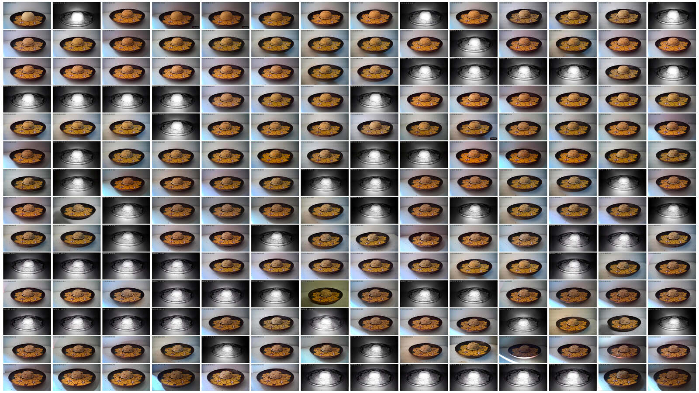
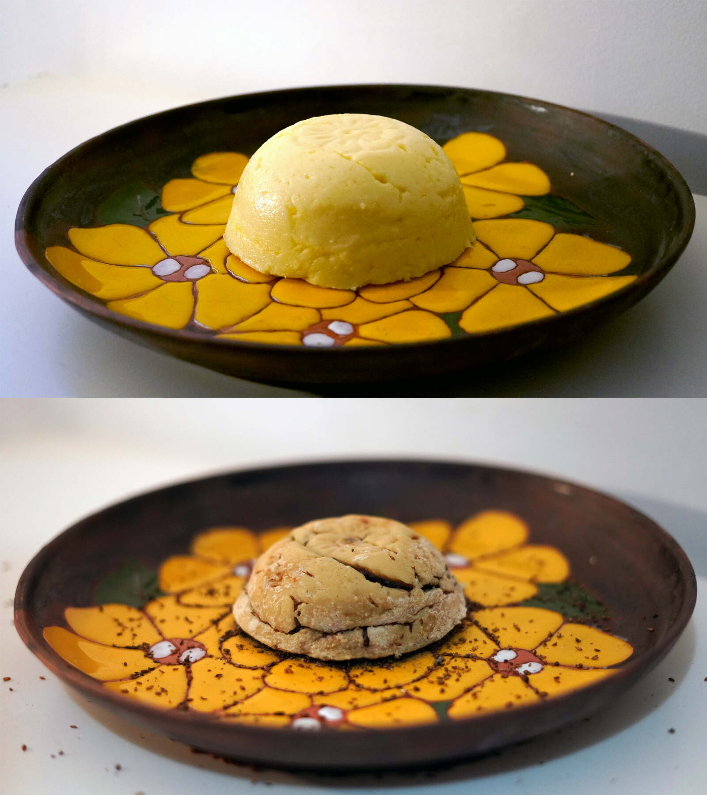
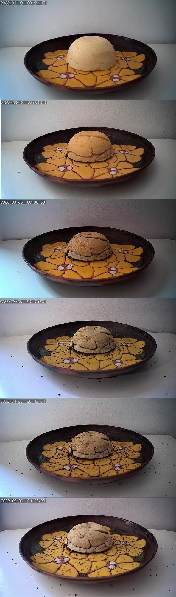

Fofoca [sobre o prato de minha mãe], 2022
Fofoca [sobre o prato de minha mãe], 2022
transmissão ao vivo de queijo feito de leites de cabra, vaca, ovelha anônimas e natália em decomposição ao vivo durante 3 meses, 50 cm x 50 cm


